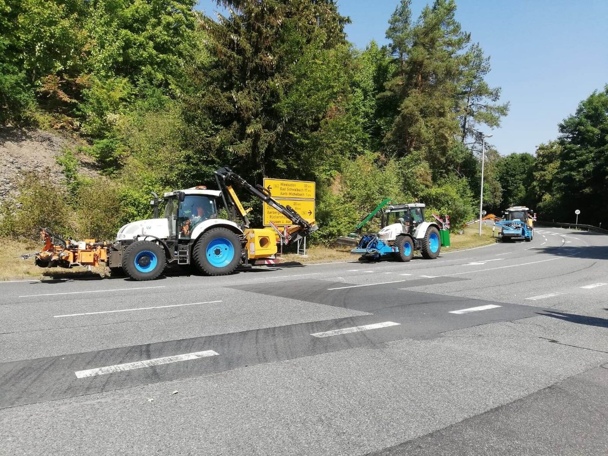

Winterdienst
- Streufahrzeuge und Kommunal-LKW
- Schneepflüge und Räumschilde
- Geräteträger mit Winterausrüstung
- Kompaktfahrzeuge für Gehwege

Kommunalleasing
Fahrzeuge und Maschinen für Winterdienst, Grünpflege und Bauhof beschaffen, ohne den Haushalt mit einer hohen Einmalinvestition zu belasten.
Was ist Kommunalleasing?
Investitionen in Fahrzeuge und Maschinen sind für Städte und Gemeinden unverzichtbar. Gleichzeitig stehen öffentliche Haushalte oft vor der Frage, wie sich notwendige Anschaffungen wirtschaftlich und planbar umsetzen lassen.
Kommunalleasing ist die Antwort darauf. Statt eine Maschine vollständig aus dem Haushalt zu bezahlen, nutzen Sie sie gegen feste, kalkulierbare Raten. Notwendige Anschaffungen lassen sich so oft schneller umsetzen, statt die alte Kehrmaschine noch eine Saison teuer zu reparieren.
Unser Unterschied: Wir sind auf Kommunal- und Sonderfahrzeuge spezialisiert. Wir wissen, wann ein Streufahrzeug im Einsatz ist und wie lange eine Kehrmaschine hält, und richten den Vertrag danach aus.
Für wen
Neben Städten und Gemeinden nutzen auch kommunale Betriebe und Einrichtungen Leasing und Langzeitmiete, um Investitionen planbar zu finanzieren.
Was wir finanzieren
Wir sind auf Kommunal- und Landtechnik spezialisiert. Typische Objekte im Kommunalleasing sind zum Beispiel:
Fragen Sie uns. Finanzierbar ist vieles, was langfristig genutzt wird.
Ihre Vorteile
Statt einer hohen Einmalinvestition fallen feste Raten an. Bei der Langzeitmiete sind die Raten keine langfristigen Kreditverbindlichkeiten.
Laufzeit und Raten stehen von Beginn an fest. Das schafft Planungssicherheit und vermeidet Investitionsspitzen.
Läuft die Maschine nur im Winterdienst, richten wir den Vertrag darauf aus. Saisonmieten sind ab drei Saisons möglich.
Anschaffungen lassen sich kurzfristiger planen und umsetzen, statt veraltete Maschinen weiter teuer zu reparieren.
Motor- und Getriebeschäden, Bedienungsfehler und Böswilligkeit sind bei der Langzeitmiete mitversichert. Wartung kann auf Wunsch enthalten sein.
Fahrzeuge und Maschinen lassen sich regelmäßig erneuern. Das senkt Ausfälle und Folgekosten.
Leasing, Mietkauf oder Langzeitmiete?
Alle drei Wege finanzieren die Maschine über feste Raten. Der Unterschied liegt im Eigentum und darin, wie lange und wie flexibel Sie die Maschine nutzen möchten.
Leasing
Mietkauf
Kommunale Langzeitmiete
Welche Form für Ihre Kommune zulässig und sinnvoll ist, hängt auch vom Haushaltsrecht Ihres Bundeslandes ab. Wir sprechen das gemeinsam mit Ihnen durch.
So läuft es ab
Sie sagen uns, welche Maschine Sie brauchen, wofür und wie lange.
Wir wählen Finanzierungsform, Laufzeit und Bank aus und rechnen, wo sinnvoll, Saisonraten durch.
Sie erhalten ein Angebot und die Unterlagen, die Kämmerei und Gremien für die Entscheidung brauchen.
Der Händler liefert, wir bezahlen ihn, und Ihre Maschine geht in den Einsatz.
Häufige Fragen
Kommunalleasing ist eine Finanzierungsform für Städte, Gemeinden, Landkreise und öffentliche Einrichtungen. Statt eine Maschine vollständig aus dem Haushalt zu bezahlen, nutzt die Kommune sie gegen feste Raten über eine vereinbarte Laufzeit.
Grundsätzlich ja. Die Einzelheiten regelt das Haushaltsrecht des jeweiligen Bundeslandes. Je nach Vertrag kann eine Anzeige oder Genehmigung bei der Kommunalaufsicht nötig sein. Klären Sie das am besten früh mit Ihrer Kämmerei, wir stellen Ihnen die nötigen Unterlagen zusammen.
Bei der kommunalen Langzeitmiete sind Laufzeiten von 6 bis 84 Monaten möglich. Beim Leasing und beim Mietkauf richten wir die Laufzeit nach der Nutzungsdauer der Maschine.
Ja. Für Winterdienstfahrzeuge sind saisonale Raten möglich. Bei der kommunalen Langzeitmiete gilt dafür eine Mindestlaufzeit von drei Saisons.
Bei der kommunalen Langzeitmiete sind technische Schäden mitversichert, etwa Motor- und Getriebeschäden, Bedienungsfehler und Böswilligkeit. Beim Leasing kann die Maschinenbruchversicherung direkt in die Rate eingerechnet werden.
Ja. Wir arbeiten mit Händlern und Herstellern der Kommunalbranche zusammen. Sie wählen die Maschine aus, wir kümmern uns um die Finanzierung.
Beratung
Ihr Ansprechpartner richtet sich nach Ihrer Postleitzahl. Oder Sie rufen direkt in Taunusstein an.